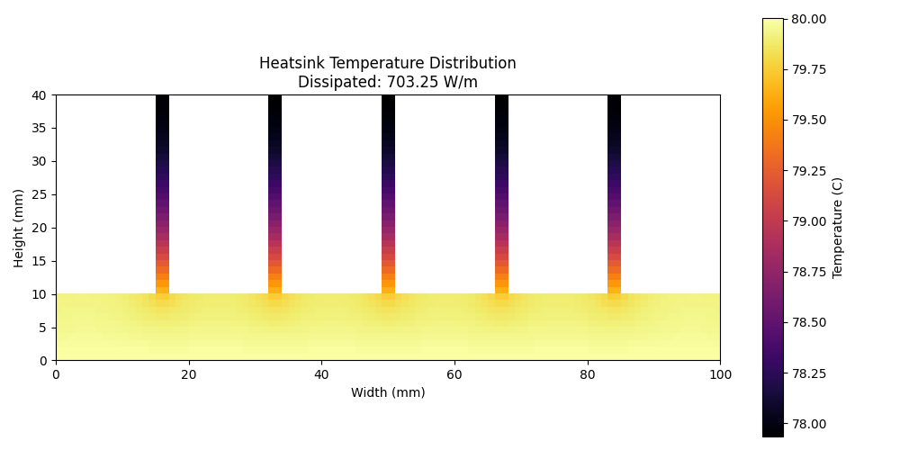

Write a rigorous mathematical proof that √2 + √3 is irrational. The proof must include: preliminary lemmas with proofs, the main argument with every algebraic step justified, an alternative proof method, and a generalization to broader classes of numbers. Output as a LaTeX-style markdown document.
Single clean method — constructs the minimal polynomial and proves irreducibility.
Two independent proof methods, five supporting lemmas, broadest possible generalization.
Write a complete 2D steady-state heat dissipation simulation for a copper heatsink with 5 fins using the Finite Difference Method (FDM). The simulation must handle complex geometry (base plate + rectangular fins), apply Robin boundary conditions (convection) on exposed surfaces and Dirichlet conditions at the heat source, solve the Laplace equation iteratively, and produce a temperature contour plot with heat dissipation metrics.
No nested Python loops. Uses numpy boolean masks and vectorized stencil operations for the entire solve.

Object-oriented design with IntEnum cell types. Uses Successive Over-Relaxation (SOR, ω=1.6) which converges faster than Jacobi — but implemented with nested Python loops instead of vectorized numpy.
| Metric | Gemini 3 Pro (HIGH) | Opus 4.6 |
|---|---|---|
| Math — Time | 60s | 66s |
| Math — Output | 4.8KB (concise) | 8.0KB (comprehensive) |
| Math — Method | Single (minimal poly + RRT) | Dual (contradiction + minimal poly) |
| Math — Generalization | √p + √q for distinct primes | √a + √b ⇔ perfect squares |
| Math — Supporting work | Inline justifications | 5 standalone lemmas with proofs |
| Physics — Time | 115s | 118s |
| Physics — Output | 10KB / 271 lines | 17.6KB / 445 lines |
| Physics — Solver | Jacobi (vectorized numpy) | SOR ω=1.6 (nested loops) |
| Physics — Runs? | ✅ Yes (1.2s) | ❌ No (SIGKILL) |
| Physics — Architecture | Compact, practical | Modular, typed, thorough |
| Cost | $0 (OAuth sub) | $0 (Max sub) |
Math: Both models match in speed (~60s). Gemini is concise and efficient — one clean proof, done. Opus is a textbook author — dual proofs, five lemmas, the broadest possible generalization, a dependency diagram. If you want a quick answer, Gemini. If you're writing lecture notes, Opus.
Physics: This is where the practical difference shows. Gemini's vectorized approach actually runs (1.2s!). Opus wrote the better architecture (typed cells, SOR, energy balance) but forgot the constraint: nested Python loops over a 16,000-node mesh = instant death on a 4-core VM. Good design that doesn't execute is worse than simple design that does. Gemini wins this round on practicality.